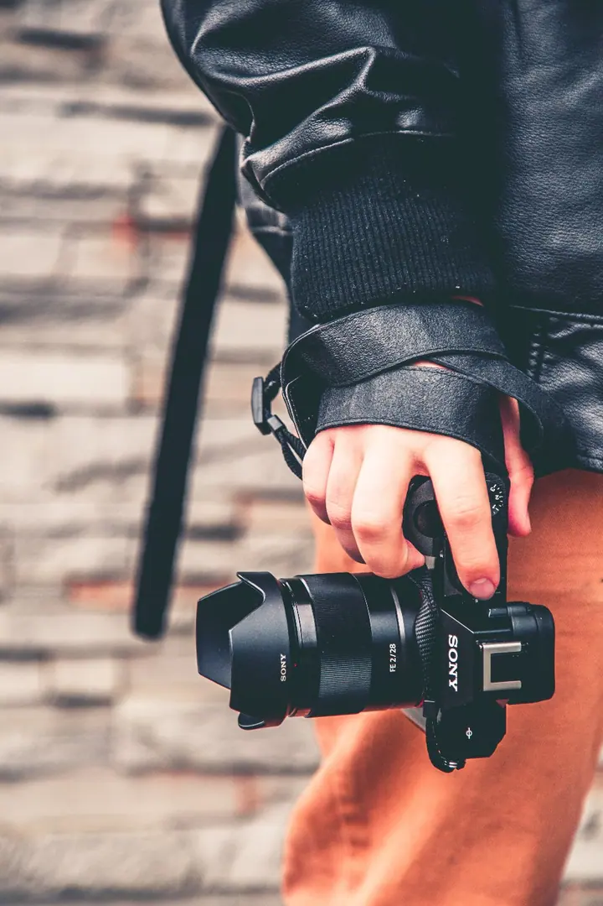
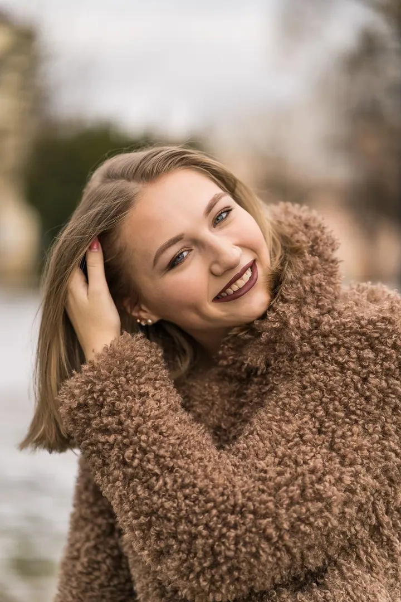

01 / 04
Rodinné focení
Fotím rodiny, těhotenské bříško, miminka i starší děti. Doma nebo venku, v klidu a v přátelské atmosféře.
Zeptat se na termín→




Pohodové focení pro celou rodinu
Zeptat se na termín →(01) Ahoj
Jmenuji se Ladislav Straka a fotím v Krupce, na Teplicku a Ústecku. Fotografuji rodiny a miminka , portréty i domácí mazlíčky. A když chcete fotit sami, vedu fotokurzy pro začátečníky i pokročilé .
(02) Co fotím
01 / 04
Fotím rodiny, těhotenské bříško, miminka i starší děti. Doma nebo venku, v klidu a v přátelské atmosféře.
Zeptat se na termín→02 / 04
Fotím profesionální portréty jednotlivců i zamilovaných párů. Na přání nafotím i intimní portrét jako dárek pro partnera nebo partnerku.
Zeptat se na termín→03 / 04
Kurzy pro začátečníky i pokročilé: základy fotoaparátu, úpravy v Lightroomu, malování světlem i noční krajina s hvězdami. Učím formou zážitků a vyzkoušení v praxi.
Zeptat se na termín→Dále nabízím
Fotím vaše zvířecí mazlíčky samotné i s vámi. V balíčcích počítám s jedním až čtyřmi mazlíčky.
↗(03) Portfolio
Kliknutím fotku zvětšíte · fotografie jsou ilustrační
(04) Postup
Od první zprávy po hotovou galerii.
Krok 1 z 4
Před focením si spolu projdeme, co si představujete, kolik vás bude a kde budeme fotit. Klidně u vás doma, nebo venku.
Krok 2 z 4
Fotíme v klidu a bez spěchu, podle balíčku 60 až 120 minut na jednom nebo dvou místech.
Krok 3 z 4
E-mailem vám pošlu odkaz na náhledovou galerii a vy si vyberete fotky, které chcete upravit. Platíte až po výběru, převodem na účet.
Krok 4 z 4
Upravené fotografie dostanete elektronicky ve velikosti pro tisk i pro sociální sítě.

Doma nebo venku, ve dne i v noci.
(05) Za objektivem
Narodil jsem se roku 1972 v Duchcově a bydlím v Unčíně u Krupky, na úpatí Krušných hor. Fotím portréty osob, zamilovaných párů, šťastných rodin a zvířecích mazlíčků v okrese Teplice a Ústí nad Labem.
Ať jde o focení v interiéru nebo venku, nejvíc mi záleží na přátelské atmosféře a na tom, abyste se cítili dobře. Mám radši pohodové, přátelské focení než dlouhé túry. Rád se vám přizpůsobím, nafotím vás doma nebo venku, ve dne i v noci.
Kromě lidí fotím denní i noční krajinu a maluji světlem. Pořádám fotokurzy pro začátečníky i pokročilé a učím hlavně praxí, ať si všechno hned vyzkoušíte. Fotím na techniku Sony a Zeiss.
Ladislav
Ladislav Straka · Rodinný a portrétní fotograf, lektor fotokurzů
Malé focení stojí 1990 Kč (5 upravených fotek, 60–90 minut), standardní 2990 Kč (10 fotek, 90–120 minut, dvě místa) a velké 4990 Kč (20 fotek). Individuální focení podle vašich požadavků začíná na 1990 Kč.
Doma nebo venku, ve dne nebo v noci, kdekoliv si řeknete nebo co spolu vymyslíme. Cestovné nad 5 km počítám 20 Kč za kilometr, včetně zpáteční cesty.
Určitě. V balíčcích počítám s osobami i domácími mazlíčky, podle velikosti balíčku s jedním až čtyřmi.
Za balíček platíte až po výběru fotografií z náhledové galerie, převodem na účet.
Formou přátelského povídání s praktickými ukázkami. Kurz Začínáme fotografovat trvá asi 4 hodiny, stojí 850 Kč a v Krupce na něm jsou nejvýš 2 účastníci. Termín se domluvíme, případně připravím individuální kurz na míru.
(07) Kontakt
Napište pár vět o tom, co si představujete, a termín, který se vám hodí.